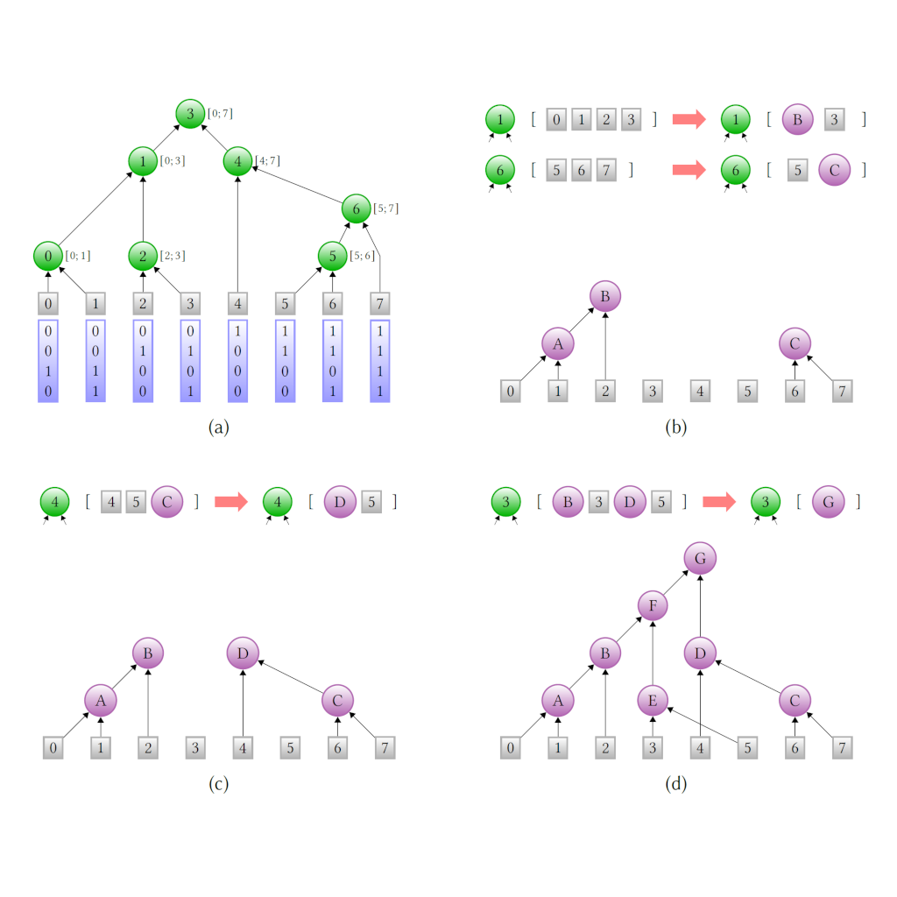

Publications
-
GATE: Geometry-Aware Trained Encoding
Jakub Bokšanský, Daniel Meister, Carsten Benthin
High-Performance Graphics 2025
-
Neural Visibility Cache for Real-Time Light Sampling
Jakub Bokšanský and Daniel Meister
arXiv, 2025
-
HIPRT: A Ray Tracing Framework in HIP
Daniel Meister, Paritosh Kulkarni, Aaryaman Vasishta, Takahiro Harada
Proceedings of the ACM on Computer Graphics and Interactive Techniques (High-Performance Graphics 2024)
-

H-PLOC: Hierarchical Parallel Locally-Ordered Clustering for Bounding Volume Hierarchy Construction
Carsten Benthin, Daniel Meister, Joshua Barczak, Rohan Mehalwal, John Tsakok, Andrew Kensler
Proceedings of the ACM on Computer Graphics and Interactive Techniques (High-Performance Graphics 2024)
-
-
-
-
Neural Sequence Transformation
Sabyasachi Mukherjee, Sayan Mukherjee, Binh-Son Hua, Nobuyuki Umetani, Daniel Meister
Computer Graphics Forum (Pacific Graphics 2021)
-
-
-
-
Ray Classification for Accelerated BVH Traversal
Jakub Hendrich, Adam Pospíšil, Daniel Meister, Jiří Bittner
Computer Graphics Forum (Eurographics Symposium on Rendering 2019)
-
-
-

Parallel BVH Construction using Progressive Hierarchical Refinement
Jakub Hendrich, Daniel Meister, Jiří Bittner
Computer Graphics Forum (Eurographics 2017)
-
-

T-SAH: Animation Optimized Bounding Volume Hierarchies
Jiří Bittner and Daniel Meister
Computer Graphics Forum (Eurographics 2015)